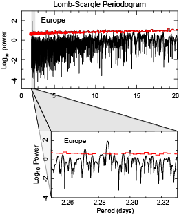
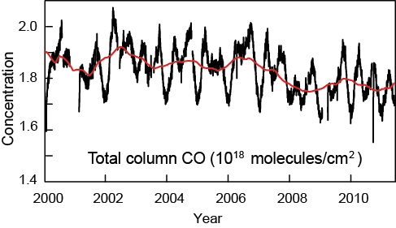
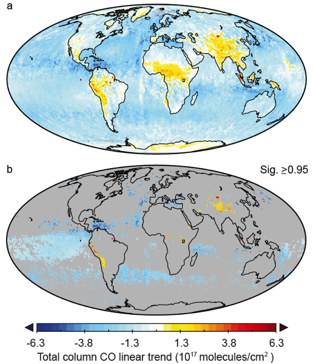

Carbon monoxide (CO) is one of 6 major air pollutants regulated by countries such as the USA. It is a product of combustion like its closely related cousin carbon dioxide, however, unlike carbon dioxide, it is formed by incomplete or inefficient combustion. While carbon dioxide is an important greenhouse gas contributing to human-induced warming of the globe, carbon monoxide does not contribute to warming. Unlike carbon dioxide however, it has the potential to significantly influence atmospheric chemistry.
This is because carbon monoxide is a substance which has undergone only a partial chemical reaction, and thus has great potential to react further: for those of you who recall the OIL RIG acronym (Oxidation Is Loss, Reduction Is Gain) from chemistry class relating to oxygen/electron transfer, carbon monoxide is a reducing agent: i.e. it removes oxygen from other molecules. Consequently, in combination with other pollutants and the light from the Sun carbon monoxide is involved in reactions which form dangerous tropospheric ozone and also urban smog — both a nuisance and significant hazard to human health and the environment.
Due to its reactive nature, its lifetime in the atmosphere is quite short (a few months only). As a result, the concentrations of carbon monoxide are very unevenly distributed (i.e. it is heterogeneous). Without time to persist and travel large distances, the highest carbon monoxide concentrations in the atmosphere are found close to emission sources. This makes it particularly useful for highlighting centres of human activity and also changes in activity over relatively short time-scales.
Carbon monoxide emissions have been measured in the troposphere continuously by satellite since March 2000 by an instrument named MOPITT (Measurements of Pollution In The Troposphere). It is an instrument designed and built by the Canadian Space Agency (CSA), and housed on-board NASA’s polar-orbiting Terra satellite. Horizontally, these measurements cover the whole globe. Vertically they are most sensitive to CO in the middle troposphere (~500mb or 12,000 feet). MOPITT requires cloud-free (clear-sky) atmosphere to determine carbon monoxide, consequently this causes some issues with high-latitude data (>65 degrees), as problematic identification of cloud cover over high-latitude ice-covered surfaces can cause some errors.
I recently performed a study on the MOPITT data, in this work—available in the open access MDPI journal Climate. I initially wanted to see if the pollution measurements could be used to identify periodic variations in emissions over regional scales at time-scales of several days to several weeks. Identifying cycles in pollution over large areas would have been useful to explore the sensitivity of cloud properties to human emissions - an important area of study in atmospheric science. To do this, my co-author Tariq Shahbaz, and I applied Lomb-Scargle period analysis techniques, and Monte Carlo significance testing. We used relatively large spatial scales (Europe, USA, and China) as identifying small-scale periods would not have helped us to subsequently examine cloud properties (which are very noisy data, and so it is preferential to examine them over large areas to reduce variability). An example of the period analysis shown in the paper is given below for the European region (you can see the paper itself for further discussion). Although we didn't identify any cycles useful for this in this data, a range of evidence suggests that such cycles they do exist at a variety of horizontal and vertical scales (which we provide a brief discussion of in the paper) and work on this topic continues.

Lomb-Scargle periodogram over the European region for seasonally de-trended CO data. A sub-plot shows a zoom on the only region of the periodogram to show a statistically significant signal at the p < 0.01 level -— the significance threshold is indicated by the red line (calculated from Monte Carlo methods described in the paper). The significant peak corresponds to a frequency of 2.286 days, and was found to be an artefact, present at all domains, related to the orbital period of the Terra satellite. Adapted from Figure 4–5 of Laken & Shahbaz, 2014.
In addition, we were motivated to use the opportunity to examine how carbon monoxide in the troposphere has changed over the past decade. Globally, the data shows an overall decline in the amount of tropospheric carbon monoxide of nearly 7% over the 2000–2012 period. This could be related to increasing efficiency of combustion technology, and researchers have long noted that tropospheric CO shows a declining trend driven by increasingly more efficient combustion technology (e.g.see here). For clarity, I note that it is perfectly possible for the greenhouse gas carbon dioxide to be increasing over the past decade (as they have been doing) whilst carbon monoxide concentrations can simultaneously decrease.

Globally averaged measurements of CO from MOPITT (Ver 5, Lev 3 combined product) with 360-day running mean (red line). Significant linear trend of y=-2.97×10^13^x+1.89×10^18^, r=-0.42, df=44, p < 0.01. Equivalent to a net CO reduction of 6.58% (or 0.56% per year). Adapted from Figure 1 of Laken & Shahbaz, 2014.
I note that I can’t say for certain that the decreasing trend is completely physical, as long-term changes in satellite-detected observations have also been known to be attributed to decay in the instruments over time, as space is a harsh environment in which to operate and instruments on-board satellites tend to decay, whilst at the same time the orbiting satellites themselves loose altitude as a result of drag on the Earth’s tenuous atmosphere leading to an inevitable return.
I found that when you look at carbon monoxide changes over smaller scales during the past decade the picture becomes more interesting than a simple decrease. There are large differences between regions — these reflect the changes in global society over the past decade - in particular we see that although on average carbon monoxide decreased over the globe, pollution over China, India and across the Asian region has undergone statistically significant increases: these are almost certainly linked with increasing industrial activity and economic growth over the regions. Similar increases in different types of pollution have also been previously reported (e.g. increasing nitrous oxide emissions over China).
I also observed an increase in carbon monoxide pollution over areas of Africa and South America (although these changes covered a smaller area and were less intense than those seen over the Asian region). Biomass burning was previously a primary factor in driving emissions over these regions, however, it is likely that the increasing trend over the past decade is attributed to industrial development. Indeed, these changes could represent a rise of major Southern Hemisphere contributors to atmospheric pollution, with significant implications for air quality and health over the regions, such as suggested by Akimoto (2003).

Go TopLinear trends in CO between March 2000 and April 2012 for (a) all pixels, and (b) statistically significant (p < 0.05 two-tailed level) pixels only. For each pixel, the values are obtained by subtracting the last point of a linear regression over the full time-period from the first point (i.e. the values are a linear change over a 1D time series of each pixel individually). For each pixel, statistical significance was calculated independently by comparison of observed values to a probability density function obtained by Monte Carlo procedures. Adapted from Figure 3 of Laken & Shahbaz, 2014.
comments powered by Disqus